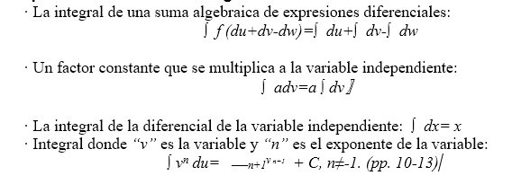
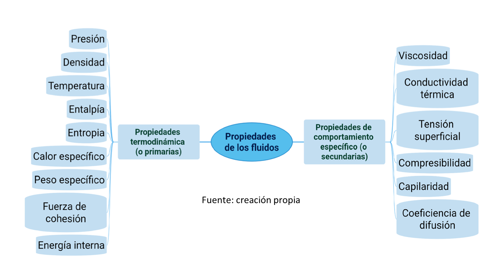
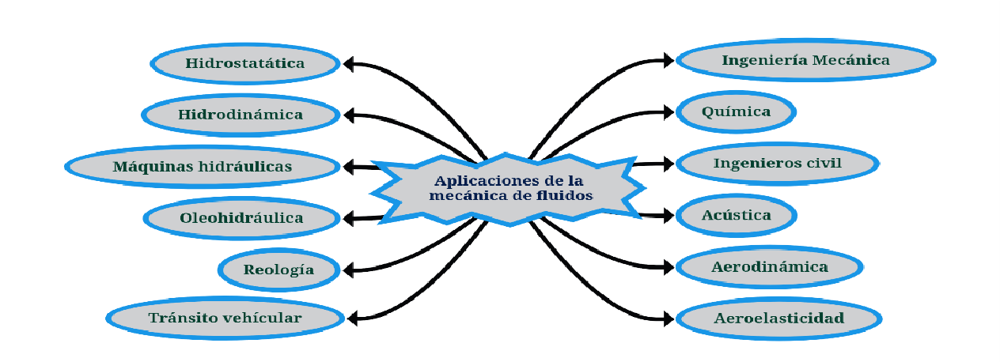

Aplicaciones del cálculo integral
en la compresibilidad de fluidos en un campo vectorial.
Esta investigación aborda el estudio de las aplicaciones del Cálculo Integral en la compresibilidad de fluidos en un campo vectorial; se realizó con la finalidad de describir conceptos y teoremas relacionados con el tópico mencionado, para aplicarlos en la propuesta de solución de problemas inéditos, además se hizo una rúbrica de evaluación que permite la valoración del trabajo realizado.
Es importante saber que las aplicaciones del Cálculo Integral en las propiedades de los fluidos ocupan un papel relevante en la sociedad, ya que están presentes en la mayoría de las ingenierías, pero si se habla específicamente de la compresibilidad esta es aplicable en la Ingeniería Mecánica y esto viene a contribuir a los nuevos retos que impone un mundo moderno y competitivo. Desde este punto de vista, las aplicaciones de las integrales juegan un rol primordial en el desarrollo de la comunidad científica.
Este trabajo es de gran interés, porque en él se describen conceptos y teoremas básicos, se plantean herramientas analíticas propias de la temática que permiten a su vez el desarrollo de la intuición en situaciones “poco intuitivas” como ser aquellos contextos en los que la velocidad del fluido es comparable a la velocidad con la cual se propaga la información de un punto a otro. Estos elementos contribuyen al desarrollo de la comunidad universitaria, y a la vez permiten tener un precedente para futuras investigaciones relacionadas con este tópico.
La viabilidad del estudio está en dependencia de la información recabada, sobre todo porque durante la búsqueda de datos no se encontraron suficientes fuentes bibliográficas y las que existen son escasas; por consiguiente, se limita a la sociedad a conocer respecto al tema, ignorando así la influencia que tiene en gran cantidad de elementos de la actualidad, tales como maquinarias de uso térmico, hidráulico, de transporte, por nombrar algunas.
Se contó con artículos de sitios de internet confiables, algunos libros disponibles en digital y en las bibliotecas, así mismo de docentes de la universidad FAREM-Estelí. También se diseñó una rúbrica que permitirá la evaluación del presente trabajo. Se espera que llegue a manos de los estudiantes y docentes, para que puedan aplicarlos en su campo de estudio.
Cálculo Integral
El Cálculo Integral es una rama de las Matemáticas con más aplicaciones, en diversas áreas del conocimiento ya que permite plantear modelos que resuelven problemas surgidos del diario vivir del ser humano, mediante la cual puede analizar cualitativa y cuantitativamente los diferentes fenómenos que se le presenten en su entorno cotidiano y profesional.
Propiedades básicas de integración

Integrales de flujo
Larson et al. (2000) afirman que “sea f (x,y,z) = Mi + Nj + Pk, donde M, N y P tienen derivadas parciales continúas sobre la superficie S, orientadas por un vector normal unitario N. La integral de F, a través de S” (p. 1356) se define como: ∫s ∫ F. Nds .
Campo vectorial
Sean M y N funciones de dos variables (x,y), definidas es una región R del plano. Se llama campo de vectores en R o cualquier función F definida por: F(x,y)= Mi+Nj. Sean M, N y P funciones de tres variables x, y, z definidas es una región Q del espacio. Se llama campo de vectores en Q a cualquier función F definida por: F(x,y,z)= Mi+Nj+Pk
Divergencia
Sea E una región sólida simple y S la superficie frontera de E, dada con orientación positiva (hacia fuera). Sea F un campo vectorial cuyas funciones componentes tienen derivadas parciales continuas en una región abierta que contiene E. Entonces
∯S F.n ̂dS =∭ divFdv =∭E ∇Fdv por consiguiente, el teorema de la divergencia plantea que, bajo las condiciones dadas, el flujo de F en el límite de la superficie es igual a la triple integral de la divergencia de F sobre E. (p .1129)
Mecánica de los fluidos
La mecánica de fluidos es parte de la física y como tal, es una ciencia especializada en el estudio del comportamiento de los fluidos en reposo y en movimiento. Pero ¿Qué es un fluido?, un fluido se define como una sustancia que cambia su forma con relativa facilidad, los fluidos incluyen tanto a los líquidos, que cambian de forma, pero no de volumen, como los gases, los cuales cambian fácilmente de forma y de volumen.

Comprensibilidad
La compresibilidad se refiere al cambio de volumen (V) de una sustancia que está sujeta a un cambio de la presión que se ejerce sobre ella. La cantidad usada normalmente para medir este fenómeno es el módulo volumétrico de elasticidad o, simplemente, módulo volumétrico, E= - ∆v/v____∆P
Aplicaciones de Mecánica de Fluidos
En la Figura 2, se muestran las diferentes aplicaciones que tiene la mecánica de fluidos en varias ciencias exactas, siendo de interés para este estudio las relacionadas con Física y Matemática.

Evaluación de los aprendizajes
La evaluación es esencialmente un proceso de recolección e interpretación de evidencias de aprendizaje que permiten emitir juicios informados y tomar decisiones acerca de la progresión de los estudiantes en este proceso. Se considera que es un componente central de un proceso de enseñanza-aprendizaje de calidad.
Rúbrica
Las rúbricas son recursos que cuentan con un gran potencial educativo, no solo al servicio de la educación primaria y secundaria, sino también en los estudios universitarios. En este ámbito educativo, las rúbricas son especialmente útiles por su contribución al desarrollo y a la evaluación de competencias, pilar fundamental de la educación superior.
Importancia
La rúbrica es importante porque la responsabilidad, la autorreflexión, proporciona criterios específicos para medir y documentar el progreso, facilita la comunicación con el alumno, te ayuda a ir puliendo los métodos de enseñanza, además que su uso no solo se enfoca en la materia, sino prácticamente todas
Método de investigación
La metodología cualitativa se aplica a estudios a nivel micro, por lo que normalmente intenta profundizar más en la situación objeto de estudio. En este sentido deberá existir un equilibrio entre la precisión, alcance y el enfoque para explicar el universo que estudia.
Autora del artículo
(Luz Juliana López López, 2023)
Bibliografía
◈ A. Beléndez, J. B. (1998). Universidad de Alicante. Recuperado el 20 de 03 de 2025, de rua.ua.es: https://rua.ua.es/dspace/bitstream/10045/11355/3/Campos_esc_y_vect.pdf
◈ Plata, U. N. (s.f.). UNLP. Recuperado el 20 de 03 de 2025, de https://unlp.edu.ar/: https://www.mate.unlp.edu.ar/practicas/114_8_16062015111652.pdf
◈ Almeria, U. d. (s.f.). UAL. Recuperado el 20 de 03 de 2025, de ual.es: https://w3.ual.es/~plopez/docencia/ita/EVA_trasptema9
◈ Luz Juliana López López, R. E. (2023). Universidad de las Regiones Autómatas de la Costa Caribe Nicaraguense. Recuperado el 25 de 03 de 2025, de ceimm.uraccan.edu.ni: http://ceimm.uraccan.edu.ni/index.php/CEI-Interculturalidad/article/view/1176/4378
◈ Adrian, C. A. (2020). Facultad de Ciencias e Ingeniería, Universidad Estatal de Milagro, Ecuador. Recuperado el 21 de 03 de 2025, de unemi.edu.ec: https://d1wqtxts1xzle7.cloudfront.net/115056761/Ensayo_Calculo_DC.-libre.pdf?1716237976=&response-content-disposition=inline%3B+filename%3DEnsayo_Calculo_DC.pdf&Expires=1742431879&Signature=RuyTatjtGM415dmqHlZRkKk5v0P4x1EZRoGOXCoAMXCRZT38Ae37MLRcpQ4uReI7v